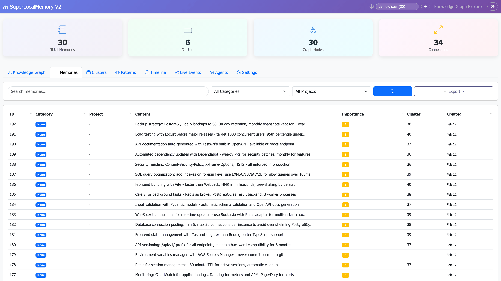
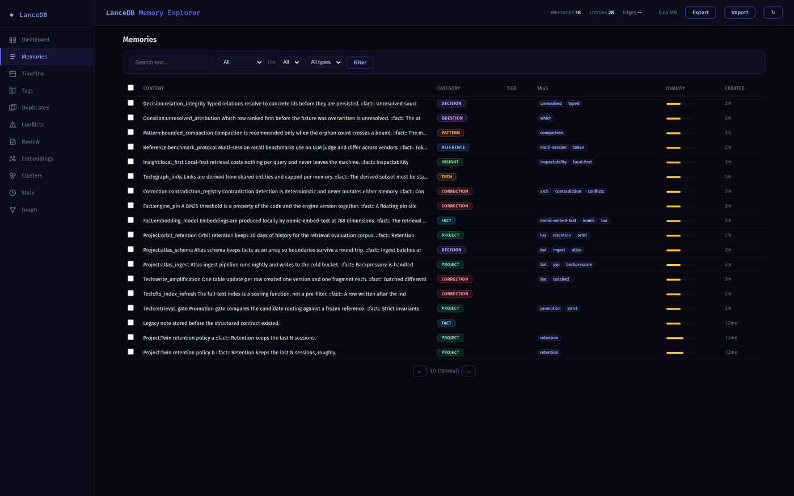

知識記憶列表 · SRC01（非引文管理）
SuperLocalMemory V2 · Memories 官方原始視窗
圖中及截圖組均為 V2 · 固定來源 c1669e94 是後續倉庫快照，不是 V3.7 或現行介面 · 未入選
封存來源：reference12 · aef3f516；原圖未改

SuperLocalMemory V2 · Copyright © 2026 Varun Pratap Bhardwaj · Creator: Varun Pratap Bhardwaj。GNU Affero General Public License v3.0 or later。原始 PNG 未修改、裁切、翻譯、換膚或重新編碼；原底部截斷保留。圖上控制不可操作，不代表作者背書。
來源、版本、授權與限制（原封存說明）
這是知識記憶管理／知識資料庫列表，不是引文、書目或學術引用管理工具。原圖底部原有視窗截斷保留；完整 3840 × 2160 原始圖片不代表展示全部 30 筆記憶或整個長頁。沒有補畫、裁切、改文案或拼配。
同一提交的截圖組 README 直接指定 demo-visual、30 筆合成且非敏感的軟體開發知識，排除真實金鑰、密碼和專有資訊。這不是從內容看似一般而推定，也不是家庭資料；圖內技術最佳實踐文字未當作本次驗證的技術建議。未啟動原應用、產生示例、存取真實資料庫或模型。
上游記錄生成日 2026-02-12、1920 × 1080 @ 2x，對應原 PNG 3840 × 2160；這是上游歷史記錄，不是重現捕捉。後續提交日期 2026-07-15 不代表截圖生成日，實際 capture build 未證。README 歷史清單約 803 KB 與固定原檔 221,340 bytes 不符，完整性以已核固定原檔的 bytes／hash 判定，不隱去差異。
完整 AGPL、截圖組署名及後續上游 NOTICE／ATTRIBUTION／AUTHORS 逐 byte 保留；不把 AGPL 改稱 MIT、CC0 或無限制素材。後續 V3、研究、原創性及論文主張只是上游存檔，未經本次驗證或背書。保留授權材料不是未來散布、衍生程式、商業用途或所有第三方字體／圖標的完整合規認證。
只加入原圖、來源 manifest、原包 README、署名及五份上游授權／聲明共九檔；完整 13 檔作者包另存不變，原 README 的測試／checksum 路徑指該包。沒有來源 HTML，因此不挪用 reviewer 的臨時載體或另造重建頁。這個密集資料表 fit-to-width 後文字較小，可開原尺寸；小尺寸閱讀性與無障礙未驗。
已有獨立本地 desktop 原圖載體顯示檢視，不等於此 09 新索引、入口、返回或原 app 驗收。原作者期 browser 未驗／local-only 狀態原樣保留；本版只靜態核查，未上傳或發布。
知識記憶列表 · SRC02（非引文管理）
Hermes LanceDB Memory Suite · Memories 原作完整視口
固定 commit fcd52b855fba022194a40615e1f935d5d52675da · 1400 × 875 原始 PNG · 未入選
封存來源：reference12 · aef3f516；原圖未改

Copyright (c) 2026 3L0935。MIT完整notice保留。原圖未裁切、重繪、翻譯或重新編碼；圖中控制不可操作，部分來源文字本來已省略，不代表每筆記憶全文。
來源、版本、授權與限制（原封存說明）
可與 SRC01 比較完整記憶列表構圖。此為軟體／專案知識資料庫，不是兒童資料、學術引文或書目管理。
作者README聲明截圖使用18筆虛構合成記憶，沒有真實資料庫資料；這是可追溯的作者聲明，不是獨立重建資料生成鏈。圖內技術敘述只作來源畫面，不是育兒建議或本工作台驗證結論。
固定來源／MIT／靜態審查與原草稿桌面展示已有有界通過；原草稿沒有本地原圖入口，當時未驗點入／Back。此版新增入口、錨點、返回及窄屏均待獨立browser驗收。capture時間／build未知，不抽取字體或圖標、不聲稱全面第三方權利清查或原作者背書。